Aplicación 1.1.a (Gestión y representación gráfica de datos): Gramática básica del tidyverse
En esta aplicación se pondrán ejemplos básicos en R y Python usando la filosofía tidyverse, que supone una ‘forma de trabajar’ dentro de cada lenguaje con el objetivo de “preparar” los datos originales para un tratamiento estadístico posterior:
“A grandes rasgos, el tidyverse es un lenguaje para resolver los retos de la ciencia de datos […]. Su objetivo principal es facilitar una conversación entre un humano y un ordenador acerca de los datos. De forma menos abstracta, el tidyverse es una colección de […] librerías que comparten una filosofía de diseño de alto nivel y unas estructuras gramatical y de datos de bajo nivel, de modo que aprender una librería facilita el aprendizaje de la siguiente.” (Traducido al español de Wickham et al., 2019)
Código R
En las siguientes páginas web se pueden encontrar los detalles sobre cada cuestión analizada en la aplicación:
Datos ordenados: Tidy Data (https://www.jstatsoft.org/article/view/v059i10)
Gestión de datos y gráficas en R: macro-librería
tidyverse(https://www.tidyverse.org/)
https://tidyr.tidyverse.org/articles/tidy-data.html (datos ordenados)
https://es.r4ds.hadley.nz/12-tidy.html (tidy data)
https://es.r4ds.hadley.nz/09-wrangle.html (data wrangling)
https://education.rstudio.com/blog/2020/07/teaching-the-tidyverse-in-2020-part-1-getting-started/
https://education.rstudio.com/blog/2020/07/teaching-the-tidyverse-in-2020-part-2-data-visualisation/
https://education.rstudio.com/blog/2020/07/teaching-the-tidyverse-in-2020-part-4-when-to-purrr/
Sobre los datos utilizados en la aplicación R:
Gapminder (https://www.gapminder.org/fw/world-health-chart/): los datos por países se han extraído de la base de datos del Banco Mundial (https://data.worldbank.org/), usando la librería
WDI(https://vincentarelbundock.github.io/WDI/index.html).NYC_Flights_2013 (https://github.com/tidyverse/nycflights13)
# Lectura de librerías
library(tidyverse)
tidyverse_packages() [1] "broom" "conflicted" "cli" "dbplyr"
[5] "dplyr" "dtplyr" "forcats" "ggplot2"
[9] "googledrive" "googlesheets4" "haven" "hms"
[13] "httr" "jsonlite" "lubridate" "magrittr"
[17] "modelr" "pillar" "purrr" "ragg"
[21] "readr" "readxl" "reprex" "rlang"
[25] "rstudioapi" "rvest" "stringr" "tibble"
[29] "tidyr" "xml2" "tidyverse" # Estructura de la macro-librería tidyverse
library(deepdep)
dep_tidyverse <- deepdep("tidyverse", depth = 1)
plot_dependencies(dep_tidyverse, "circular")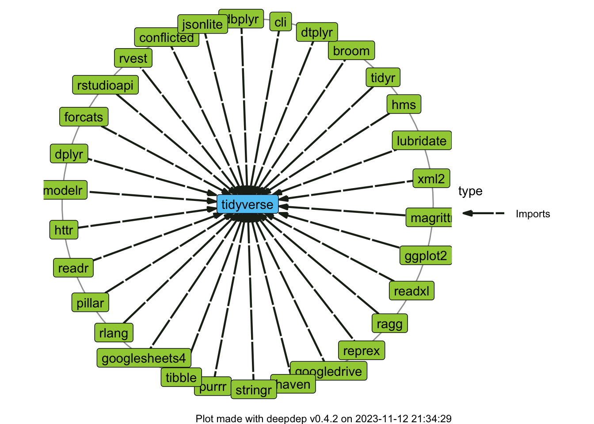
# Lectura de datos
# https://es.r4ds.hadley.nz/11-import.html
gapminder <- read_csv("data/GAPMINDER.csv")
# https://es.r4ds.hadley.nz/10-tibble.html
class(gapminder)[1] "spec_tbl_df" "tbl_df" "tbl" "data.frame" # Cambio de nombres de variables
gapminder <- gapminder %>%
rename(year = date,
gdpPercap = NY.GDP.PCAP.CD,
lifeExp = SP.DYN.LE00.IN,
pop = SP.POP.TOTL)
# Datos iniciales y finales
head(gapminder)# A tibble: 6 × 8
iso2c iso3c country year gdpPercap lifeExp pop region
<chr> <chr> <chr> <dbl> <dbl> <dbl> <dbl> <chr>
1 AW ABW Aruba 1960 NA 64.2 54608 Latin America & Caribbean
2 AW ABW Aruba 1961 NA 64.5 55811 Latin America & Caribbean
3 AW ABW Aruba 1962 NA 64.8 56682 Latin America & Caribbean
4 AW ABW Aruba 1963 NA 65.1 57475 Latin America & Caribbean
5 AW ABW Aruba 1964 NA 65.3 58178 Latin America & Caribbean
6 AW ABW Aruba 1965 NA 65.5 58782 Latin America & Caribbeantail(gapminder)# A tibble: 6 × 8
iso2c iso3c country year gdpPercap lifeExp pop region
<chr> <chr> <chr> <dbl> <dbl> <dbl> <dbl> <chr>
1 ZW ZWE Zimbabwe 2016 1422. 60.3 14452704 Sub-Saharan Africa
2 ZW ZWE Zimbabwe 2017 1192. 60.7 14751101 Sub-Saharan Africa
3 ZW ZWE Zimbabwe 2018 2269. 61.4 15052184 Sub-Saharan Africa
4 ZW ZWE Zimbabwe 2019 1422. 61.3 15354608 Sub-Saharan Africa
5 ZW ZWE Zimbabwe 2020 1373. 61.1 15669666 Sub-Saharan Africa
6 ZW ZWE Zimbabwe 2021 1774. 59.3 15993524 Sub-Saharan Africa# Manejo y transformación de datos
# (https://es.r4ds.hadley.nz/05-transform.html)
#
# Librería dplyr (https://dplyr.tidyverse.org/)
# y 'tuberías' (https://es.r4ds.hadley.nz/18-pipes.html)
#
# "Verbos" de dplyr
# select
gapminder_selected <- select(gapminder, year, country, pop, gdpPercap)
# filter
gapminder_filtered <- filter(gapminder_selected, year >= 1980)
# mutate
gapminder_mutated <- mutate(gapminder_filtered, GDP = gdpPercap*pop)
# group_by
gapminder_grouped <- group_by(gapminder_mutated, country)
# summarise
gapminder_summarised <- summarise(gapminder_grouped, AVG_GDP = mean(GDP))
# arrange
gapminder_arranged_ascending <- arrange(gapminder_summarised, AVG_GDP)
gapminder_arranged_ascending# A tibble: 217 × 2
country AVG_GDP
<chr> <dbl>
1 Kiribati 99642313.
2 Tonga 247764480.
3 Dominica 335912659.
4 Vanuatu 416627524.
5 St. Vincent and the Grenadines 477704237.
6 St. Kitts and Nevis 505233445.
7 Grenada 562186456.
8 Guinea-Bissau 580471717.
9 Comoros 617956234.
10 Solomon Islands 652451970.
# ℹ 207 more rowsgapminder_arranged_descending <- arrange(gapminder_summarised, -AVG_GDP)
gapminder_arranged_descending# A tibble: 217 × 2
country AVG_GDP
<chr> <dbl>
1 United States 1.11e13
2 China 4.12e12
3 Japan 4.10e12
4 Germany 2.48e12
5 United Kingdom 1.82e12
6 France 1.79e12
7 Italy 1.44e12
8 Brazil 1.03e12
9 India 9.96e11
10 Canada 9.96e11
# ℹ 207 more rows# Operador tubería (pipe) del tidyverse: %>%
AVG_GDP <-
gapminder %>%
select(year, country, pop, gdpPercap) %>%
filter(year>=1980) %>%
mutate(GDP=gdpPercap*pop) %>%
group_by(country) %>%
summarise(AVG_GDP=mean(GDP)) %>%
arrange(-AVG_GDP)
AVG_GDP# A tibble: 217 × 2
country AVG_GDP
<chr> <dbl>
1 United States 1.11e13
2 China 4.12e12
3 Japan 4.10e12
4 Germany 2.48e12
5 United Kingdom 1.82e12
6 France 1.79e12
7 Italy 1.44e12
8 Brazil 1.03e12
9 India 9.96e11
10 Canada 9.96e11
# ℹ 207 more rows# Tubería nativa de R: |>
gapminder |> subset(year==2021) |> head()# A tibble: 6 × 8
iso2c iso3c country year gdpPercap lifeExp pop region
<chr> <chr> <chr> <dbl> <dbl> <dbl> <dbl> <chr>
1 AW ABW Aruba 2021 29342. 74.6 106537 Latin Ameri…
2 AF AFG Afghanistan 2021 364. 62.0 40099462 South Asia
3 AO AGO Angola 2021 1904. 61.6 34503774 Sub-Saharan…
4 AL ALB Albania 2021 6377. 76.5 2811666 Europe & Ce…
5 AD AND Andorra 2021 42072. NA 79034 Europe & Ce…
6 AE ARE United Arab Emirates 2021 44316. 78.7 9365145 Middle East…# Familia de operaciones join
# (https://es.r4ds.hadley.nz/13-relational-data.html)
#
# `inner_join(df1, df2)`
# `left_join(df1, df2)`
# `right_join(df1, df2)`
# `full_join(df1, df2)`
# `semi_join(df1, df2)`
# `anti_join(df1, df2)`
#
# Lectura de datos
library(nycflights13)
flights # A tibble: 336,776 × 19
year month day dep_time sched_dep_time dep_delay arr_time sched_arr_time
<int> <int> <int> <int> <int> <dbl> <int> <int>
1 2013 1 1 517 515 2 830 819
2 2013 1 1 533 529 4 850 830
3 2013 1 1 542 540 2 923 850
4 2013 1 1 544 545 -1 1004 1022
5 2013 1 1 554 600 -6 812 837
6 2013 1 1 554 558 -4 740 728
7 2013 1 1 555 600 -5 913 854
8 2013 1 1 557 600 -3 709 723
9 2013 1 1 557 600 -3 838 846
10 2013 1 1 558 600 -2 753 745
# ℹ 336,766 more rows
# ℹ 11 more variables: arr_delay <dbl>, carrier <chr>, flight <int>,
# tailnum <chr>, origin <chr>, dest <chr>, air_time <dbl>, distance <dbl>,
# hour <dbl>, minute <dbl>, time_hour <dttm>planes# A tibble: 3,322 × 9
tailnum year type manufacturer model engines seats speed engine
<chr> <int> <chr> <chr> <chr> <int> <int> <int> <chr>
1 N10156 2004 Fixed wing multi… EMBRAER EMB-… 2 55 NA Turbo…
2 N102UW 1998 Fixed wing multi… AIRBUS INDU… A320… 2 182 NA Turbo…
3 N103US 1999 Fixed wing multi… AIRBUS INDU… A320… 2 182 NA Turbo…
4 N104UW 1999 Fixed wing multi… AIRBUS INDU… A320… 2 182 NA Turbo…
5 N10575 2002 Fixed wing multi… EMBRAER EMB-… 2 55 NA Turbo…
6 N105UW 1999 Fixed wing multi… AIRBUS INDU… A320… 2 182 NA Turbo…
7 N107US 1999 Fixed wing multi… AIRBUS INDU… A320… 2 182 NA Turbo…
8 N108UW 1999 Fixed wing multi… AIRBUS INDU… A320… 2 182 NA Turbo…
9 N109UW 1999 Fixed wing multi… AIRBUS INDU… A320… 2 182 NA Turbo…
10 N110UW 1999 Fixed wing multi… AIRBUS INDU… A320… 2 182 NA Turbo…
# ℹ 3,312 more rows# Ejemplo de left_join
left_join(flights, planes) %>%
select(year, month, day, dep_time, arr_time,
carrier, flight, tailnum, type, model)# A tibble: 336,776 × 10
year month day dep_time arr_time carrier flight tailnum type model
<int> <int> <int> <int> <int> <chr> <int> <chr> <chr> <chr>
1 2013 1 1 517 830 UA 1545 N14228 <NA> <NA>
2 2013 1 1 533 850 UA 1714 N24211 <NA> <NA>
3 2013 1 1 542 923 AA 1141 N619AA <NA> <NA>
4 2013 1 1 544 1004 B6 725 N804JB <NA> <NA>
5 2013 1 1 554 812 DL 461 N668DN <NA> <NA>
6 2013 1 1 554 740 UA 1696 N39463 <NA> <NA>
7 2013 1 1 555 913 B6 507 N516JB <NA> <NA>
8 2013 1 1 557 709 EV 5708 N829AS <NA> <NA>
9 2013 1 1 557 838 B6 79 N593JB <NA> <NA>
10 2013 1 1 558 753 AA 301 N3ALAA <NA> <NA>
# ℹ 336,766 more rows# Para evitar errores o malas asignaciones automáticas (tailnum y year)
# debe usarse el argumento 'by = '
# Ejemplos de otras operacionesn pueden encontrarse en:
# https://cran.r-project.org/web/packages/dplyr/vignettes/two-table.html
left_join(flights, planes, by = "tailnum") %>%
select(month, day, dep_time, arr_time,
carrier, flight, tailnum, type, model)# A tibble: 336,776 × 9
month day dep_time arr_time carrier flight tailnum type model
<int> <int> <int> <int> <chr> <int> <chr> <chr> <chr>
1 1 1 517 830 UA 1545 N14228 Fixed wing multi … 737-…
2 1 1 533 850 UA 1714 N24211 Fixed wing multi … 737-…
3 1 1 542 923 AA 1141 N619AA Fixed wing multi … 757-…
4 1 1 544 1004 B6 725 N804JB Fixed wing multi … A320…
5 1 1 554 812 DL 461 N668DN Fixed wing multi … 757-…
6 1 1 554 740 UA 1696 N39463 Fixed wing multi … 737-…
7 1 1 555 913 B6 507 N516JB Fixed wing multi … A320…
8 1 1 557 709 EV 5708 N829AS Fixed wing multi … CL-6…
9 1 1 557 838 B6 79 N593JB Fixed wing multi … A320…
10 1 1 558 753 AA 301 N3ALAA <NA> <NA>
# ℹ 336,766 more rows# Gramática de gráficas (ggplot2) [https://ggplot2.tidyverse.org/]
# (https://es.r4ds.hadley.nz/03-visualize.html)
p <- ggplot(data = gapminder, aes(x = gdpPercap, y = lifeExp))
# Gráfica 0
p0 <- p + geom_point(alpha = 0.3)
p0
# Gráfica 0 plus: con ajuste no paramétrico
p0plus <- p0 + geom_smooth(method = "loess")
p0plus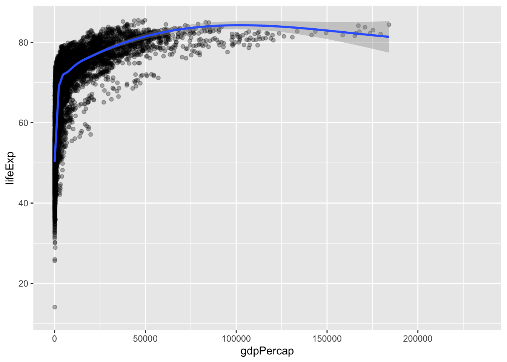
# Gráfica 1: colores por regiones
p1 <- p + geom_point(aes(size = pop, col = region), alpha = 0.3)
p1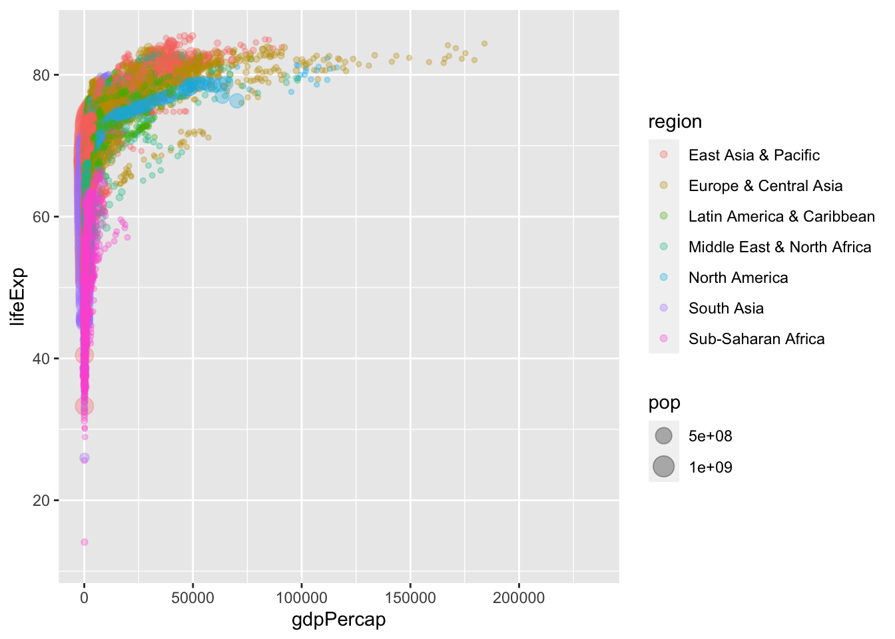
# Gráfica 2: colores por regiones y tamaño por población
p2 <- p +
geom_point(aes(size = pop, col = region), alpha = 0.3) +
scale_color_brewer(name = "Región", palette = "Set1") + # Escala de colores
scale_size(name = "Población", labels = scales::comma) + # Escala de puntos
scale_x_log10(labels = scales::dollar) + # Esc. logarítmica eje X, unidades $
labs(x = "PIB per capita (log)", y = "Experanza de vida al nacer") + # Títulos
theme_minimal() # Tema mínimo (b&w)
p2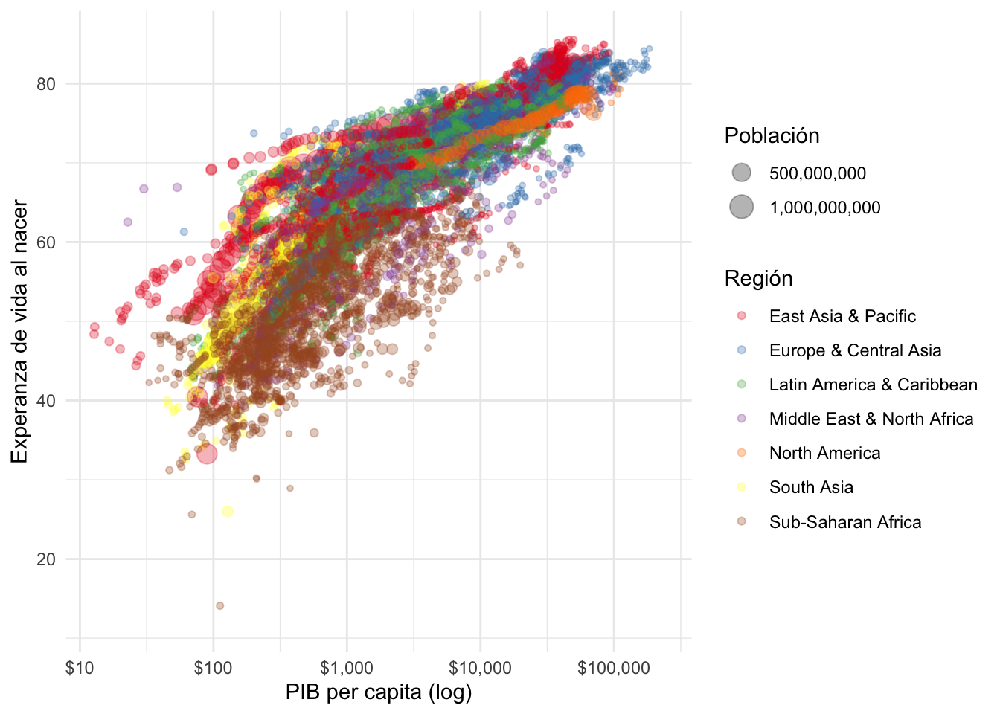
# Gráfica 3: burbujas de Hans-Rosling
library(viridis)
library(gganimate)
p3 <- gapminder |>
ggplot(aes(x = log(gdpPercap), y = lifeExp, size = pop)) +
geom_point(alpha = 0.5, aes(color = region)) +
scale_size(range = c(.1, 16), guide = "none") +
scale_x_continuous(limits = c(2.5, 12.5)) +
scale_y_continuous(limits = c(30, 90)) +
scale_color_viridis(discrete = TRUE, name = "Región", option = "viridis") +
labs(x = "RIQUEZA - PIB per capita (log)",
y = "SALUD - Esperanza de vida al nacer") +
theme_classic() +
geom_text(aes(x = 7.5, y = 60, label = year), size = 14, color = 'lightgrey', family = 'Oswald') +
gganimate::transition_states(year, transition_length = 1, state_length = 1) +
gganimate::ease_aes('cubic-in-out')
p3
# Gráfica 4: gráfica animada (cambio de la relación por años)
library(gganimate)
p4 <- ggplot(gapminder, aes(gdpPercap, lifeExp, size = pop, colour = country)) +
geom_point(alpha = 0.7, show.legend = FALSE) +
scale_x_log10(labels = scales::dollar) +
facet_wrap(~region) +
labs(title = 'Año: {frame_time}', x = 'PIB per capita (log)', y = 'Experanza de vida') +
transition_time(year) +
ease_aes('linear')
p4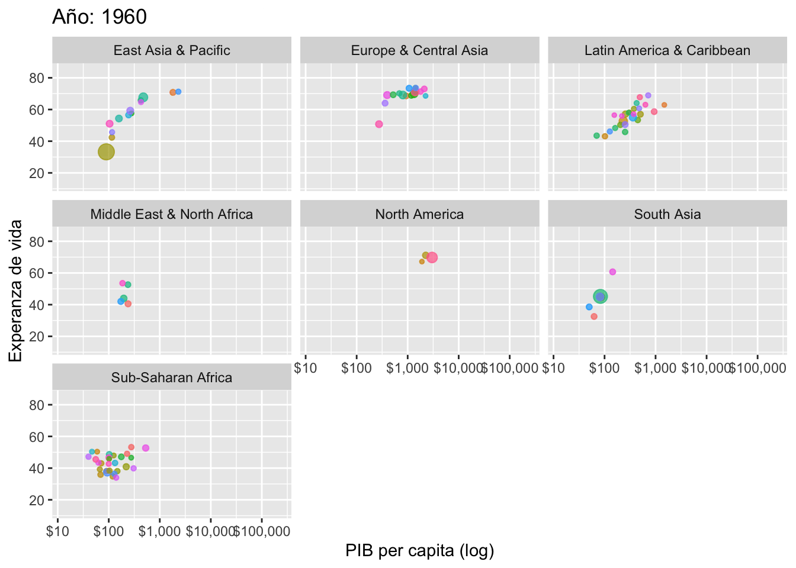
# Análisis exploratorio de datos (EDA)
# (https://es.r4ds.hadley.nz/07-eda.html)
library(skimr)
skim(gapminder)| Name | gapminder |
| Number of rows | 13454 |
| Number of columns | 8 |
| _______________________ | |
| Column type frequency: | |
| character | 4 |
| numeric | 4 |
| ________________________ | |
| Group variables | None |
Variable type: character
| skim_variable | n_missing | complete_rate | min | max | empty | n_unique | whitespace |
|---|---|---|---|---|---|---|---|
| iso2c | 62 | 1 | 2 | 2 | 0 | 216 | 0 |
| iso3c | 0 | 1 | 3 | 3 | 0 | 217 | 0 |
| country | 0 | 1 | 4 | 30 | 0 | 217 | 0 |
| region | 0 | 1 | 10 | 26 | 0 | 7 | 0 |
Variable type: numeric
| skim_variable | n_missing | complete_rate | mean | sd | p0 | p25 | p50 | p75 | p100 | hist |
|---|---|---|---|---|---|---|---|---|---|---|
| year | 0 | 1.00 | 1990.50 | 17.90 | 1960.00 | 1975.00 | 1990.50 | 2006.00 | 2021.0 | ▇▇▇▇▇ |
| gdpPercap | 3108 | 0.77 | 9200.70 | 18094.41 | 12.79 | 581.77 | 2109.08 | 8870.14 | 234317.1 | ▇▁▁▁▁ |
| lifeExp | 564 | 0.96 | 64.71 | 11.28 | 11.99 | 57.65 | 67.55 | 73.00 | 85.5 | ▁▁▃▇▇ |
| pop | 30 | 1.00 | 24697848.53 | 103586682.12 | 2646.00 | 480456.50 | 4180250.00 | 13449954.75 | 1412360000.0 | ▇▁▁▁▁ |
# Gráficas bivariantes con GGally (https://ggobi.github.io/ggally/)
library(GGally)
gapminder %>% select(-c(iso2c,iso3c,country,year,region)) %>% ggpairs()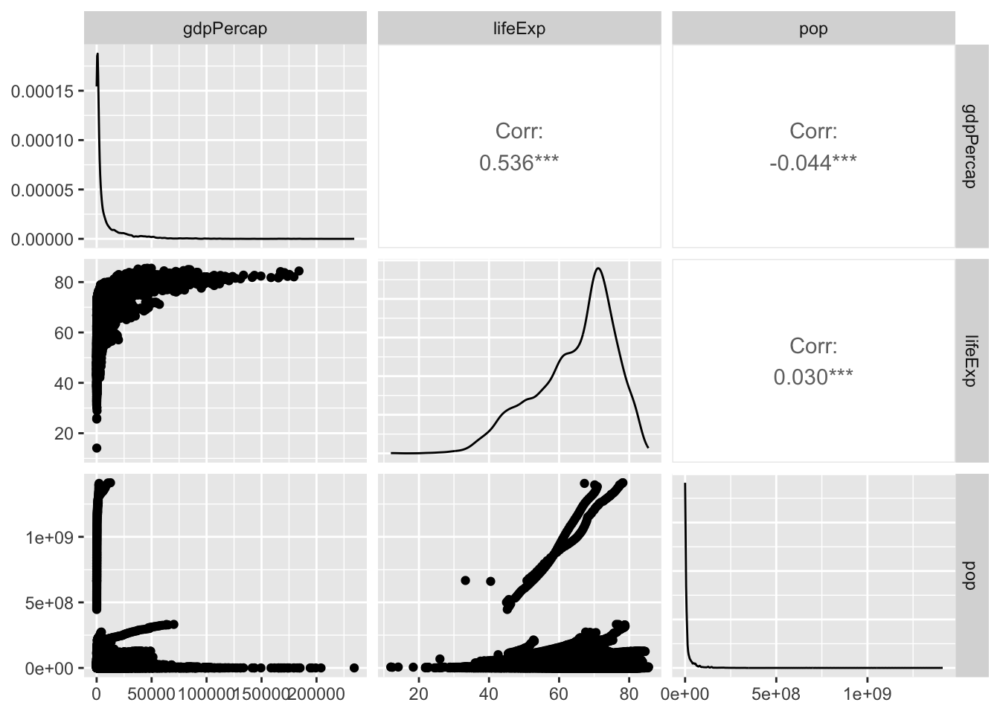
# Gráficas parciales con línea de regresión
ggplot(data = gapminder, aes(x = log(gdpPercap), y = lifeExp)) +
geom_smooth(method = "lm", col = "blue") +
geom_point()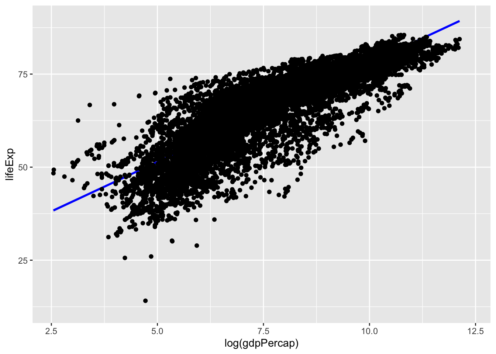
ggplot(data = gapminder, aes(x = year, y = lifeExp)) +
geom_smooth(method = "lm", col = "blue") +
geom_point()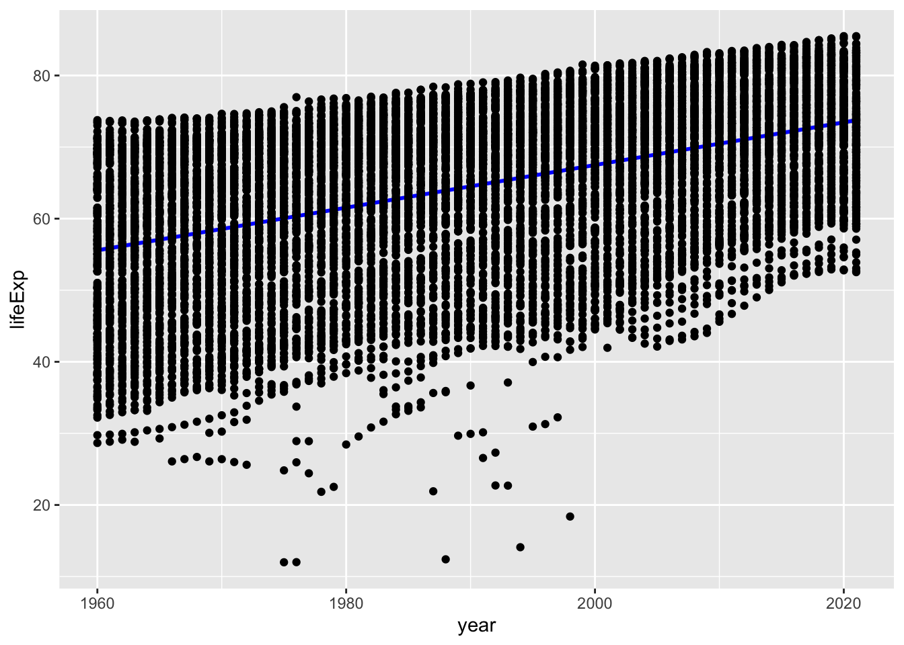
Código Python
En las siguientes páginas web se pueden encontrar los detalles sobre cada cuestión analizada en este lenguaje:
- Gestión a la tidyverse de datos y gráficos en Python:
librería
siuba: https://siuba.readthedocs.io/en/latest/librería
plotnine: https://plotnine.readthedocs.io/en/stable/
Sobre los datos utilizados en la aplicación Python:
# Lectura de librerías
import numpy as np
import pandas as pd
import matplotlib.pyplot as plt
from siuba import *
from plotnine import *
# Lectura de datos
mtcars = pd.read_csv('data/MTCARS.csv')
mtcars.head() model mpg cyl disp hp ... qsec vs am gear carb
0 Mazda RX4 21.0 6 160.0 110 ... 16.46 0 1 4 4
1 Mazda RX4 Wag 21.0 6 160.0 110 ... 17.02 0 1 4 4
2 Datsun 710 22.8 4 108.0 93 ... 18.61 1 1 4 1
3 Hornet 4 Drive 21.4 6 258.0 110 ... 19.44 1 0 3 1
4 Hornet Sportabout 18.7 8 360.0 175 ... 17.02 0 0 3 2
[5 rows x 12 columns]# Gramática de datos y tuberías (>>) con siuba
# arrange, group_by
mtcars_groups = mtcars >> arrange(_.hp) >> group_by(_.cyl)
mtcars_groups(grouped data frame)
model mpg cyl disp hp ... qsec vs am gear carb
18 Honda Civic 30.4 4 75.7 52 ... 18.52 1 1 4 2
7 Merc 240D 24.4 4 146.7 62 ... 20.00 1 0 4 2
19 Toyota Corolla 33.9 4 71.1 65 ... 19.90 1 1 4 1
17 Fiat 128 32.4 4 78.7 66 ... 19.47 1 1 4 1
25 Fiat X1-9 27.3 4 79.0 66 ... 18.90 1 1 4 1
26 Porsche 914-2 26.0 4 120.3 91 ... 16.70 0 1 5 2
2 Datsun 710 22.8 4 108.0 93 ... 18.61 1 1 4 1
8 Merc 230 22.8 4 140.8 95 ... 22.90 1 0 4 2
20 Toyota Corona 21.5 4 120.1 97 ... 20.01 1 0 3 1
5 Valiant 18.1 6 225.0 105 ... 20.22 1 0 3 1
31 Volvo 142E 21.4 4 121.0 109 ... 18.60 1 1 4 2
0 Mazda RX4 21.0 6 160.0 110 ... 16.46 0 1 4 4
1 Mazda RX4 Wag 21.0 6 160.0 110 ... 17.02 0 1 4 4
3 Hornet 4 Drive 21.4 6 258.0 110 ... 19.44 1 0 3 1
27 Lotus Europa 30.4 4 95.1 113 ... 16.90 1 1 5 2
9 Merc 280 19.2 6 167.6 123 ... 18.30 1 0 4 4
10 Merc 280C 17.8 6 167.6 123 ... 18.90 1 0 4 4
21 Dodge Challenger 15.5 8 318.0 150 ... 16.87 0 0 3 2
22 AMC Javelin 15.2 8 304.0 150 ... 17.30 0 0 3 2
4 Hornet Sportabout 18.7 8 360.0 175 ... 17.02 0 0 3 2
24 Pontiac Firebird 19.2 8 400.0 175 ... 17.05 0 0 3 2
29 Ferrari Dino 19.7 6 145.0 175 ... 15.50 0 1 5 6
11 Merc 450SE 16.4 8 275.8 180 ... 17.40 0 0 3 3
12 Merc 450SL 17.3 8 275.8 180 ... 17.60 0 0 3 3
13 Merc 450SLC 15.2 8 275.8 180 ... 18.00 0 0 3 3
14 Cadillac Fleetwood 10.4 8 472.0 205 ... 17.98 0 0 3 4
15 Lincoln Continental 10.4 8 460.0 215 ... 17.82 0 0 3 4
16 Chrysler Imperial 14.7 8 440.0 230 ... 17.42 0 0 3 4
6 Duster 360 14.3 8 360.0 245 ... 15.84 0 0 3 4
23 Camaro Z28 13.3 8 350.0 245 ... 15.41 0 0 3 4
28 Ford Pantera L 15.8 8 351.0 264 ... 14.50 0 1 5 4
30 Maserati Bora 15.0 8 301.0 335 ... 14.60 0 1 5 8
[32 rows x 12 columns]# group_by, filter, summarize, arrange
# and
(mtcars >> filter((_.cyl == 4), (_.gear == 5))) model mpg cyl disp hp drat wt qsec vs am gear carb
26 Porsche 914-2 26.0 4 120.3 91 4.43 2.140 16.7 0 1 5 2
27 Lotus Europa 30.4 4 95.1 113 3.77 1.513 16.9 1 1 5 2# or
(mtcars >> filter((_.cyl == 4) | (_.gear == 5))) model mpg cyl disp hp ... qsec vs am gear carb
2 Datsun 710 22.8 4 108.0 93 ... 18.61 1 1 4 1
7 Merc 240D 24.4 4 146.7 62 ... 20.00 1 0 4 2
8 Merc 230 22.8 4 140.8 95 ... 22.90 1 0 4 2
17 Fiat 128 32.4 4 78.7 66 ... 19.47 1 1 4 1
18 Honda Civic 30.4 4 75.7 52 ... 18.52 1 1 4 2
19 Toyota Corolla 33.9 4 71.1 65 ... 19.90 1 1 4 1
20 Toyota Corona 21.5 4 120.1 97 ... 20.01 1 0 3 1
25 Fiat X1-9 27.3 4 79.0 66 ... 18.90 1 1 4 1
26 Porsche 914-2 26.0 4 120.3 91 ... 16.70 0 1 5 2
27 Lotus Europa 30.4 4 95.1 113 ... 16.90 1 1 5 2
28 Ford Pantera L 15.8 8 351.0 264 ... 14.50 0 1 5 4
29 Ferrari Dino 19.7 6 145.0 175 ... 15.50 0 1 5 6
30 Maserati Bora 15.0 8 301.0 335 ... 14.60 0 1 5 8
31 Volvo 142E 21.4 4 121.0 109 ... 18.60 1 1 4 2
[14 rows x 12 columns]# grouped filters, count
(mtcars >> group_by(_.cyl) >> summarize(n = _.cyl.count())) cyl n
0 4 11
1 6 7
2 8 14(mtcars >> count(_.cyl)) cyl n
0 4 11
1 6 7
2 8 14(mtcars >> count(_.cyl, _.gear, sort = True)) cyl gear n
0 8 3 12
1 4 4 8
2 6 4 4
3 4 5 2
4 6 3 2
5 8 5 2
6 4 3 1
7 6 5 1(mtcars >> count(_.cyl, many_gears = _.gear > 3)) cyl many_gears n
0 4 False 1
1 4 True 10
2 6 False 2
3 6 True 5
4 8 False 12
5 8 True 2(mtcars >> group_by(_.cyl) >> summarize(n = _.cyl.median())) cyl n
0 4 4.0
1 6 6.0
2 8 8.0(mtcars >> group_by(_.cyl) >> filter(_.hp > _.hp.median()))(grouped data frame)
model mpg cyl disp hp ... qsec vs am gear carb
2 Datsun 710 22.8 4 108.0 93 ... 18.61 1 1 4 1
6 Duster 360 14.3 8 360.0 245 ... 15.84 0 0 3 4
8 Merc 230 22.8 4 140.8 95 ... 22.90 1 0 4 2
9 Merc 280 19.2 6 167.6 123 ... 18.30 1 0 4 4
10 Merc 280C 17.8 6 167.6 123 ... 18.90 1 0 4 4
14 Cadillac Fleetwood 10.4 8 472.0 205 ... 17.98 0 0 3 4
15 Lincoln Continental 10.4 8 460.0 215 ... 17.82 0 0 3 4
16 Chrysler Imperial 14.7 8 440.0 230 ... 17.42 0 0 3 4
20 Toyota Corona 21.5 4 120.1 97 ... 20.01 1 0 3 1
23 Camaro Z28 13.3 8 350.0 245 ... 15.41 0 0 3 4
27 Lotus Europa 30.4 4 95.1 113 ... 16.90 1 1 5 2
28 Ford Pantera L 15.8 8 351.0 264 ... 14.50 0 1 5 4
29 Ferrari Dino 19.7 6 145.0 175 ... 15.50 0 1 5 6
30 Maserati Bora 15.0 8 301.0 335 ... 14.60 0 1 5 8
31 Volvo 142E 21.4 4 121.0 109 ... 18.60 1 1 4 2
[15 rows x 12 columns]# arrange, group_by, filter
from siuba.dply.vector import row_number
(mtcars >> arrange(_.hp) >> group_by(_.cyl) >> filter(row_number(_) <= 2))(grouped data frame)
model mpg cyl disp hp ... qsec vs am gear carb
0 Mazda RX4 21.0 6 160.0 110 ... 16.46 0 1 4 4
5 Valiant 18.1 6 225.0 105 ... 20.22 1 0 3 1
7 Merc 240D 24.4 4 146.7 62 ... 20.00 1 0 4 2
18 Honda Civic 30.4 4 75.7 52 ... 18.52 1 1 4 2
21 Dodge Challenger 15.5 8 318.0 150 ... 16.87 0 0 3 2
22 AMC Javelin 15.2 8 304.0 150 ... 17.30 0 0 3 2
[6 rows x 12 columns]# lag, led
from siuba.dply.vector import lag # o led
(mtcars >> arrange(_.hp) >> filter(_.hp - lag(_.hp) > 50)) model mpg cyl disp hp drat wt qsec vs am gear carb
30 Maserati Bora 15.0 8 301.0 335 3.54 3.57 14.6 0 1 5 8# arrange, select, rename
small_mtcars = mtcars >> select(_.cyl, _.mpg, _.hp)
small_mtcars cyl mpg hp
0 6 21.0 110
1 6 21.0 110
2 4 22.8 93
3 6 21.4 110
4 8 18.7 175
5 6 18.1 105
6 8 14.3 245
7 4 24.4 62
8 4 22.8 95
9 6 19.2 123
10 6 17.8 123
11 8 16.4 180
12 8 17.3 180
13 8 15.2 180
14 8 10.4 205
15 8 10.4 215
16 8 14.7 230
17 4 32.4 66
18 4 30.4 52
19 4 33.9 65
20 4 21.5 97
21 8 15.5 150
22 8 15.2 150
23 8 13.3 245
24 8 19.2 175
25 4 27.3 66
26 4 26.0 91
27 4 30.4 113
28 8 15.8 264
29 6 19.7 175
30 8 15.0 335
31 4 21.4 109# ordenar filas con una variable
(small_mtcars >> arrange(_.hp)) # ascendente cyl mpg hp
18 4 30.4 52
7 4 24.4 62
19 4 33.9 65
17 4 32.4 66
25 4 27.3 66
26 4 26.0 91
2 4 22.8 93
8 4 22.8 95
20 4 21.5 97
5 6 18.1 105
31 4 21.4 109
0 6 21.0 110
1 6 21.0 110
3 6 21.4 110
27 4 30.4 113
9 6 19.2 123
10 6 17.8 123
21 8 15.5 150
22 8 15.2 150
4 8 18.7 175
24 8 19.2 175
29 6 19.7 175
11 8 16.4 180
12 8 17.3 180
13 8 15.2 180
14 8 10.4 205
15 8 10.4 215
16 8 14.7 230
6 8 14.3 245
23 8 13.3 245
28 8 15.8 264
30 8 15.0 335(small_mtcars >> arrange(-_.hp)) # descendente cyl mpg hp
30 8 15.0 335
28 8 15.8 264
6 8 14.3 245
23 8 13.3 245
16 8 14.7 230
15 8 10.4 215
14 8 10.4 205
11 8 16.4 180
12 8 17.3 180
13 8 15.2 180
4 8 18.7 175
24 8 19.2 175
29 6 19.7 175
21 8 15.5 150
22 8 15.2 150
9 6 19.2 123
10 6 17.8 123
27 4 30.4 113
0 6 21.0 110
1 6 21.0 110
3 6 21.4 110
31 4 21.4 109
5 6 18.1 105
20 4 21.5 97
8 4 22.8 95
2 4 22.8 93
26 4 26.0 91
17 4 32.4 66
25 4 27.3 66
19 4 33.9 65
7 4 24.4 62
18 4 30.4 52# ordenar filas usando varias varialbes
(small_mtcars >> arrange(_.cyl, _.mpg)) cyl mpg hp
31 4 21.4 109
20 4 21.5 97
2 4 22.8 93
8 4 22.8 95
7 4 24.4 62
26 4 26.0 91
25 4 27.3 66
18 4 30.4 52
27 4 30.4 113
17 4 32.4 66
19 4 33.9 65
10 6 17.8 123
5 6 18.1 105
9 6 19.2 123
29 6 19.7 175
0 6 21.0 110
1 6 21.0 110
3 6 21.4 110
14 8 10.4 205
15 8 10.4 215
23 8 13.3 245
6 8 14.3 245
16 8 14.7 230
30 8 15.0 335
13 8 15.2 180
22 8 15.2 150
21 8 15.5 150
28 8 15.8 264
11 8 16.4 180
12 8 17.3 180
4 8 18.7 175
24 8 19.2 175# ordenar por hp/cyl (horsepower per cylinder)
(small_mtcars >> arrange(_.hp / _.cyl)) cyl mpg hp
18 4 30.4 52
7 4 24.4 62
19 4 33.9 65
17 4 32.4 66
25 4 27.3 66
5 6 18.1 105
0 6 21.0 110
1 6 21.0 110
3 6 21.4 110
21 8 15.5 150
22 8 15.2 150
9 6 19.2 123
10 6 17.8 123
4 8 18.7 175
24 8 19.2 175
11 8 16.4 180
12 8 17.3 180
13 8 15.2 180
26 4 26.0 91
2 4 22.8 93
8 4 22.8 95
20 4 21.5 97
14 8 10.4 205
15 8 10.4 215
31 4 21.4 109
27 4 30.4 113
16 8 14.7 230
29 6 19.7 175
6 8 14.3 245
23 8 13.3 245
28 8 15.8 264
30 8 15.0 335# seleccionar variables
# equivalente: mtcars >> select(1, 2) , mtcars >> select("mpg", "cyl")
(mtcars >> select(_.mpg, _.cyl)) mpg cyl
0 21.0 6
1 21.0 6
2 22.8 4
3 21.4 6
4 18.7 8
5 18.1 6
6 14.3 8
7 24.4 4
8 22.8 4
9 19.2 6
10 17.8 6
11 16.4 8
12 17.3 8
13 15.2 8
14 10.4 8
15 10.4 8
16 14.7 8
17 32.4 4
18 30.4 4
19 33.9 4
20 21.5 4
21 15.5 8
22 15.2 8
23 13.3 8
24 19.2 8
25 27.3 4
26 26.0 4
27 30.4 4
28 15.8 8
29 19.7 6
30 15.0 8
31 21.4 4# excluir columnas
(mtcars >> select(-_.mpg, -_.cyl)) model disp hp drat wt qsec vs am gear carb
0 Mazda RX4 160.0 110 3.90 2.620 16.46 0 1 4 4
1 Mazda RX4 Wag 160.0 110 3.90 2.875 17.02 0 1 4 4
2 Datsun 710 108.0 93 3.85 2.320 18.61 1 1 4 1
3 Hornet 4 Drive 258.0 110 3.08 3.215 19.44 1 0 3 1
4 Hornet Sportabout 360.0 175 3.15 3.440 17.02 0 0 3 2
5 Valiant 225.0 105 2.76 3.460 20.22 1 0 3 1
6 Duster 360 360.0 245 3.21 3.570 15.84 0 0 3 4
7 Merc 240D 146.7 62 3.69 3.190 20.00 1 0 4 2
8 Merc 230 140.8 95 3.92 3.150 22.90 1 0 4 2
9 Merc 280 167.6 123 3.92 3.440 18.30 1 0 4 4
10 Merc 280C 167.6 123 3.92 3.440 18.90 1 0 4 4
11 Merc 450SE 275.8 180 3.07 4.070 17.40 0 0 3 3
12 Merc 450SL 275.8 180 3.07 3.730 17.60 0 0 3 3
13 Merc 450SLC 275.8 180 3.07 3.780 18.00 0 0 3 3
14 Cadillac Fleetwood 472.0 205 2.93 5.250 17.98 0 0 3 4
15 Lincoln Continental 460.0 215 3.00 5.424 17.82 0 0 3 4
16 Chrysler Imperial 440.0 230 3.23 5.345 17.42 0 0 3 4
17 Fiat 128 78.7 66 4.08 2.200 19.47 1 1 4 1
18 Honda Civic 75.7 52 4.93 1.615 18.52 1 1 4 2
19 Toyota Corolla 71.1 65 4.22 1.835 19.90 1 1 4 1
20 Toyota Corona 120.1 97 3.70 2.465 20.01 1 0 3 1
21 Dodge Challenger 318.0 150 2.76 3.520 16.87 0 0 3 2
22 AMC Javelin 304.0 150 3.15 3.435 17.30 0 0 3 2
23 Camaro Z28 350.0 245 3.73 3.840 15.41 0 0 3 4
24 Pontiac Firebird 400.0 175 3.08 3.845 17.05 0 0 3 2
25 Fiat X1-9 79.0 66 4.08 1.935 18.90 1 1 4 1
26 Porsche 914-2 120.3 91 4.43 2.140 16.70 0 1 5 2
27 Lotus Europa 95.1 113 3.77 1.513 16.90 1 1 5 2
28 Ford Pantera L 351.0 264 4.22 3.170 14.50 0 1 5 4
29 Ferrari Dino 145.0 175 3.62 2.770 15.50 0 1 5 6
30 Maserati Bora 301.0 335 3.54 3.570 14.60 0 1 5 8
31 Volvo 142E 121.0 109 4.11 2.780 18.60 1 1 4 2(mtcars >> select(-_.model)) mpg cyl disp hp drat wt qsec vs am gear carb
0 21.0 6 160.0 110 3.90 2.620 16.46 0 1 4 4
1 21.0 6 160.0 110 3.90 2.875 17.02 0 1 4 4
2 22.8 4 108.0 93 3.85 2.320 18.61 1 1 4 1
3 21.4 6 258.0 110 3.08 3.215 19.44 1 0 3 1
4 18.7 8 360.0 175 3.15 3.440 17.02 0 0 3 2
5 18.1 6 225.0 105 2.76 3.460 20.22 1 0 3 1
6 14.3 8 360.0 245 3.21 3.570 15.84 0 0 3 4
7 24.4 4 146.7 62 3.69 3.190 20.00 1 0 4 2
8 22.8 4 140.8 95 3.92 3.150 22.90 1 0 4 2
9 19.2 6 167.6 123 3.92 3.440 18.30 1 0 4 4
10 17.8 6 167.6 123 3.92 3.440 18.90 1 0 4 4
11 16.4 8 275.8 180 3.07 4.070 17.40 0 0 3 3
12 17.3 8 275.8 180 3.07 3.730 17.60 0 0 3 3
13 15.2 8 275.8 180 3.07 3.780 18.00 0 0 3 3
14 10.4 8 472.0 205 2.93 5.250 17.98 0 0 3 4
15 10.4 8 460.0 215 3.00 5.424 17.82 0 0 3 4
16 14.7 8 440.0 230 3.23 5.345 17.42 0 0 3 4
17 32.4 4 78.7 66 4.08 2.200 19.47 1 1 4 1
18 30.4 4 75.7 52 4.93 1.615 18.52 1 1 4 2
19 33.9 4 71.1 65 4.22 1.835 19.90 1 1 4 1
20 21.5 4 120.1 97 3.70 2.465 20.01 1 0 3 1
21 15.5 8 318.0 150 2.76 3.520 16.87 0 0 3 2
22 15.2 8 304.0 150 3.15 3.435 17.30 0 0 3 2
23 13.3 8 350.0 245 3.73 3.840 15.41 0 0 3 4
24 19.2 8 400.0 175 3.08 3.845 17.05 0 0 3 2
25 27.3 4 79.0 66 4.08 1.935 18.90 1 1 4 1
26 26.0 4 120.3 91 4.43 2.140 16.70 0 1 5 2
27 30.4 4 95.1 113 3.77 1.513 16.90 1 1 5 2
28 15.8 8 351.0 264 4.22 3.170 14.50 0 1 5 4
29 19.7 6 145.0 175 3.62 2.770 15.50 0 1 5 6
30 15.0 8 301.0 335 3.54 3.570 14.60 0 1 5 8
31 21.4 4 121.0 109 4.11 2.780 18.60 1 1 4 2# seleccionar y renombrar
(mtcars >> select(_.miles_per_gallon == _.mpg, _.number_of_cylinders == _.cyl)) miles_per_gallon number_of_cylinders
0 21.0 6
1 21.0 6
2 22.8 4
3 21.4 6
4 18.7 8
5 18.1 6
6 14.3 8
7 24.4 4
8 22.8 4
9 19.2 6
10 17.8 6
11 16.4 8
12 17.3 8
13 15.2 8
14 10.4 8
15 10.4 8
16 14.7 8
17 32.4 4
18 30.4 4
19 33.9 4
20 21.5 4
21 15.5 8
22 15.2 8
23 13.3 8
24 19.2 8
25 27.3 4
26 26.0 4
27 30.4 4
28 15.8 8
29 19.7 6
30 15.0 8
31 21.4 4# seleccionar columnas (adjacentes)
(mtcars >> select(_["mpg": "hp"])) # equivalente: mtcars >> select(_[1:3]) mpg cyl disp hp
0 21.0 6 160.0 110
1 21.0 6 160.0 110
2 22.8 4 108.0 93
3 21.4 6 258.0 110
4 18.7 8 360.0 175
5 18.1 6 225.0 105
6 14.3 8 360.0 245
7 24.4 4 146.7 62
8 22.8 4 140.8 95
9 19.2 6 167.6 123
10 17.8 6 167.6 123
11 16.4 8 275.8 180
12 17.3 8 275.8 180
13 15.2 8 275.8 180
14 10.4 8 472.0 205
15 10.4 8 460.0 215
16 14.7 8 440.0 230
17 32.4 4 78.7 66
18 30.4 4 75.7 52
19 33.9 4 71.1 65
20 21.5 4 120.1 97
21 15.5 8 318.0 150
22 15.2 8 304.0 150
23 13.3 8 350.0 245
24 19.2 8 400.0 175
25 27.3 4 79.0 66
26 26.0 4 120.3 91
27 30.4 4 95.1 113
28 15.8 8 351.0 264
29 19.7 6 145.0 175
30 15.0 8 301.0 335
31 21.4 4 121.0 109# excluir columnas seleccionadas
(mtcars >> select(-_["mpg": "hp"])) model drat wt qsec vs am gear carb
0 Mazda RX4 3.90 2.620 16.46 0 1 4 4
1 Mazda RX4 Wag 3.90 2.875 17.02 0 1 4 4
2 Datsun 710 3.85 2.320 18.61 1 1 4 1
3 Hornet 4 Drive 3.08 3.215 19.44 1 0 3 1
4 Hornet Sportabout 3.15 3.440 17.02 0 0 3 2
5 Valiant 2.76 3.460 20.22 1 0 3 1
6 Duster 360 3.21 3.570 15.84 0 0 3 4
7 Merc 240D 3.69 3.190 20.00 1 0 4 2
8 Merc 230 3.92 3.150 22.90 1 0 4 2
9 Merc 280 3.92 3.440 18.30 1 0 4 4
10 Merc 280C 3.92 3.440 18.90 1 0 4 4
11 Merc 450SE 3.07 4.070 17.40 0 0 3 3
12 Merc 450SL 3.07 3.730 17.60 0 0 3 3
13 Merc 450SLC 3.07 3.780 18.00 0 0 3 3
14 Cadillac Fleetwood 2.93 5.250 17.98 0 0 3 4
15 Lincoln Continental 3.00 5.424 17.82 0 0 3 4
16 Chrysler Imperial 3.23 5.345 17.42 0 0 3 4
17 Fiat 128 4.08 2.200 19.47 1 1 4 1
18 Honda Civic 4.93 1.615 18.52 1 1 4 2
19 Toyota Corolla 4.22 1.835 19.90 1 1 4 1
20 Toyota Corona 3.70 2.465 20.01 1 0 3 1
21 Dodge Challenger 2.76 3.520 16.87 0 0 3 2
22 AMC Javelin 3.15 3.435 17.30 0 0 3 2
23 Camaro Z28 3.73 3.840 15.41 0 0 3 4
24 Pontiac Firebird 3.08 3.845 17.05 0 0 3 2
25 Fiat X1-9 4.08 1.935 18.90 1 1 4 1
26 Porsche 914-2 4.43 2.140 16.70 0 1 5 2
27 Lotus Europa 3.77 1.513 16.90 1 1 5 2
28 Ford Pantera L 4.22 3.170 14.50 0 1 5 4
29 Ferrari Dino 3.62 2.770 15.50 0 1 5 6
30 Maserati Bora 3.54 3.570 14.60 0 1 5 8
31 Volvo 142E 4.11 2.780 18.60 1 1 4 2# renombrar
mtcars >> rename(transm = "am") model mpg cyl disp hp ... qsec vs transm gear carb
0 Mazda RX4 21.0 6 160.0 110 ... 16.46 0 1 4 4
1 Mazda RX4 Wag 21.0 6 160.0 110 ... 17.02 0 1 4 4
2 Datsun 710 22.8 4 108.0 93 ... 18.61 1 1 4 1
3 Hornet 4 Drive 21.4 6 258.0 110 ... 19.44 1 0 3 1
4 Hornet Sportabout 18.7 8 360.0 175 ... 17.02 0 0 3 2
5 Valiant 18.1 6 225.0 105 ... 20.22 1 0 3 1
6 Duster 360 14.3 8 360.0 245 ... 15.84 0 0 3 4
7 Merc 240D 24.4 4 146.7 62 ... 20.00 1 0 4 2
8 Merc 230 22.8 4 140.8 95 ... 22.90 1 0 4 2
9 Merc 280 19.2 6 167.6 123 ... 18.30 1 0 4 4
10 Merc 280C 17.8 6 167.6 123 ... 18.90 1 0 4 4
11 Merc 450SE 16.4 8 275.8 180 ... 17.40 0 0 3 3
12 Merc 450SL 17.3 8 275.8 180 ... 17.60 0 0 3 3
13 Merc 450SLC 15.2 8 275.8 180 ... 18.00 0 0 3 3
14 Cadillac Fleetwood 10.4 8 472.0 205 ... 17.98 0 0 3 4
15 Lincoln Continental 10.4 8 460.0 215 ... 17.82 0 0 3 4
16 Chrysler Imperial 14.7 8 440.0 230 ... 17.42 0 0 3 4
17 Fiat 128 32.4 4 78.7 66 ... 19.47 1 1 4 1
18 Honda Civic 30.4 4 75.7 52 ... 18.52 1 1 4 2
19 Toyota Corolla 33.9 4 71.1 65 ... 19.90 1 1 4 1
20 Toyota Corona 21.5 4 120.1 97 ... 20.01 1 0 3 1
21 Dodge Challenger 15.5 8 318.0 150 ... 16.87 0 0 3 2
22 AMC Javelin 15.2 8 304.0 150 ... 17.30 0 0 3 2
23 Camaro Z28 13.3 8 350.0 245 ... 15.41 0 0 3 4
24 Pontiac Firebird 19.2 8 400.0 175 ... 17.05 0 0 3 2
25 Fiat X1-9 27.3 4 79.0 66 ... 18.90 1 1 4 1
26 Porsche 914-2 26.0 4 120.3 91 ... 16.70 0 1 5 2
27 Lotus Europa 30.4 4 95.1 113 ... 16.90 1 1 5 2
28 Ford Pantera L 15.8 8 351.0 264 ... 14.50 0 1 5 4
29 Ferrari Dino 19.7 6 145.0 175 ... 15.50 0 1 5 6
30 Maserati Bora 15.0 8 301.0 335 ... 14.60 0 1 5 8
31 Volvo 142E 21.4 4 121.0 109 ... 18.60 1 1 4 2
[32 rows x 12 columns]# mutate
# nuevas columnas
(small_mtcars >> mutate(hp_per_cyl = _.hp / _.cyl)) cyl mpg hp hp_per_cyl
0 6 21.0 110 18.333333
1 6 21.0 110 18.333333
2 4 22.8 93 23.250000
3 6 21.4 110 18.333333
4 8 18.7 175 21.875000
5 6 18.1 105 17.500000
6 8 14.3 245 30.625000
7 4 24.4 62 15.500000
8 4 22.8 95 23.750000
9 6 19.2 123 20.500000
10 6 17.8 123 20.500000
11 8 16.4 180 22.500000
12 8 17.3 180 22.500000
13 8 15.2 180 22.500000
14 8 10.4 205 25.625000
15 8 10.4 215 26.875000
16 8 14.7 230 28.750000
17 4 32.4 66 16.500000
18 4 30.4 52 13.000000
19 4 33.9 65 16.250000
20 4 21.5 97 24.250000
21 8 15.5 150 18.750000
22 8 15.2 150 18.750000
23 8 13.3 245 30.625000
24 8 19.2 175 21.875000
25 4 27.3 66 16.500000
26 4 26.0 91 22.750000
27 4 30.4 113 28.250000
28 8 15.8 264 33.000000
29 6 19.7 175 29.166667
30 8 15.0 335 41.875000
31 4 21.4 109 27.250000(small_mtcars >> mutate(hp_per_cyl = _.hp / _.cyl, diff = _.hp_per_cyl - _.hp_per_cyl.shift(1))) cyl mpg hp hp_per_cyl diff
0 6 21.0 110 18.333333 NaN
1 6 21.0 110 18.333333 0.000000
2 4 22.8 93 23.250000 4.916667
3 6 21.4 110 18.333333 -4.916667
4 8 18.7 175 21.875000 3.541667
5 6 18.1 105 17.500000 -4.375000
6 8 14.3 245 30.625000 13.125000
7 4 24.4 62 15.500000 -15.125000
8 4 22.8 95 23.750000 8.250000
9 6 19.2 123 20.500000 -3.250000
10 6 17.8 123 20.500000 0.000000
11 8 16.4 180 22.500000 2.000000
12 8 17.3 180 22.500000 0.000000
13 8 15.2 180 22.500000 0.000000
14 8 10.4 205 25.625000 3.125000
15 8 10.4 215 26.875000 1.250000
16 8 14.7 230 28.750000 1.875000
17 4 32.4 66 16.500000 -12.250000
18 4 30.4 52 13.000000 -3.500000
19 4 33.9 65 16.250000 3.250000
20 4 21.5 97 24.250000 8.000000
21 8 15.5 150 18.750000 -5.500000
22 8 15.2 150 18.750000 0.000000
23 8 13.3 245 30.625000 11.875000
24 8 19.2 175 21.875000 -8.750000
25 4 27.3 66 16.500000 -5.375000
26 4 26.0 91 22.750000 6.250000
27 4 30.4 113 28.250000 5.500000
28 8 15.8 264 33.000000 4.750000
29 6 19.7 175 29.166667 -3.833333
30 8 15.0 335 41.875000 12.708333
31 4 21.4 109 27.250000 -14.625000# mutate, group_by
(small_mtcars >> group_by(_.cyl) >> mutate(hp_mean = _.hp.mean(), demeaned_hp = _.hp - _.hp_mean))(grouped data frame)
cyl mpg hp hp_mean demeaned_hp
0 6 21.0 110 122.285714 -12.285714
1 6 21.0 110 122.285714 -12.285714
2 4 22.8 93 82.636364 10.363636
3 6 21.4 110 122.285714 -12.285714
4 8 18.7 175 209.214286 -34.214286
5 6 18.1 105 122.285714 -17.285714
6 8 14.3 245 209.214286 35.785714
7 4 24.4 62 82.636364 -20.636364
8 4 22.8 95 82.636364 12.363636
9 6 19.2 123 122.285714 0.714286
10 6 17.8 123 122.285714 0.714286
11 8 16.4 180 209.214286 -29.214286
12 8 17.3 180 209.214286 -29.214286
13 8 15.2 180 209.214286 -29.214286
14 8 10.4 205 209.214286 -4.214286
15 8 10.4 215 209.214286 5.785714
16 8 14.7 230 209.214286 20.785714
17 4 32.4 66 82.636364 -16.636364
18 4 30.4 52 82.636364 -30.636364
19 4 33.9 65 82.636364 -17.636364
20 4 21.5 97 82.636364 14.363636
21 8 15.5 150 209.214286 -59.214286
22 8 15.2 150 209.214286 -59.214286
23 8 13.3 245 209.214286 35.785714
24 8 19.2 175 209.214286 -34.214286
25 4 27.3 66 82.636364 -16.636364
26 4 26.0 91 82.636364 8.363636
27 4 30.4 113 82.636364 30.363636
28 8 15.8 264 209.214286 54.785714
29 6 19.7 175 122.285714 52.714286
30 8 15.0 335 209.214286 125.785714
31 4 21.4 109 82.636364 26.363636# transmute = mutate + select
(mtcars >> transmute(_.cyl, _.mpg, hp_per_cyl = _.hp / _.cyl)) cyl mpg hp_per_cyl
0 6 21.0 18.333333
1 6 21.0 18.333333
2 4 22.8 23.250000
3 6 21.4 18.333333
4 8 18.7 21.875000
5 6 18.1 17.500000
6 8 14.3 30.625000
7 4 24.4 15.500000
8 4 22.8 23.750000
9 6 19.2 20.500000
10 6 17.8 20.500000
11 8 16.4 22.500000
12 8 17.3 22.500000
13 8 15.2 22.500000
14 8 10.4 25.625000
15 8 10.4 26.875000
16 8 14.7 28.750000
17 4 32.4 16.500000
18 4 30.4 13.000000
19 4 33.9 16.250000
20 4 21.5 24.250000
21 8 15.5 18.750000
22 8 15.2 18.750000
23 8 13.3 30.625000
24 8 19.2 21.875000
25 4 27.3 16.500000
26 4 26.0 22.750000
27 4 30.4 28.250000
28 8 15.8 33.000000
29 6 19.7 29.166667
30 8 15.0 41.875000
31 4 21.4 27.250000# summarize
# global
(mtcars >> summarize(avg_mpg = _.mpg.mean())) avg_mpg
0 20.090625# por grupos
(mtcars >> group_by(_.cyl) >> summarize(avg_mpg = _.mpg.mean())) cyl avg_mpg
0 4 26.663636
1 6 19.742857
2 8 15.100000# filter
high_hp_mtcars = mtcars >> filter(_.hp > _.hp.mean())
high_hp_mtcars model mpg cyl disp hp ... qsec vs am gear carb
4 Hornet Sportabout 18.7 8 360.0 175 ... 17.02 0 0 3 2
6 Duster 360 14.3 8 360.0 245 ... 15.84 0 0 3 4
11 Merc 450SE 16.4 8 275.8 180 ... 17.40 0 0 3 3
12 Merc 450SL 17.3 8 275.8 180 ... 17.60 0 0 3 3
13 Merc 450SLC 15.2 8 275.8 180 ... 18.00 0 0 3 3
14 Cadillac Fleetwood 10.4 8 472.0 205 ... 17.98 0 0 3 4
15 Lincoln Continental 10.4 8 460.0 215 ... 17.82 0 0 3 4
16 Chrysler Imperial 14.7 8 440.0 230 ... 17.42 0 0 3 4
21 Dodge Challenger 15.5 8 318.0 150 ... 16.87 0 0 3 2
22 AMC Javelin 15.2 8 304.0 150 ... 17.30 0 0 3 2
23 Camaro Z28 13.3 8 350.0 245 ... 15.41 0 0 3 4
24 Pontiac Firebird 19.2 8 400.0 175 ... 17.05 0 0 3 2
28 Ford Pantera L 15.8 8 351.0 264 ... 14.50 0 1 5 4
29 Ferrari Dino 19.7 6 145.0 175 ... 15.50 0 1 5 6
30 Maserati Bora 15.0 8 301.0 335 ... 14.60 0 1 5 8
[15 rows x 12 columns](high_hp_mtcars >> mutate(avg_hp = _.hp.mean())) model mpg cyl disp hp ... vs am gear carb avg_hp
4 Hornet Sportabout 18.7 8 360.0 175 ... 0 0 3 2 206.933333
6 Duster 360 14.3 8 360.0 245 ... 0 0 3 4 206.933333
11 Merc 450SE 16.4 8 275.8 180 ... 0 0 3 3 206.933333
12 Merc 450SL 17.3 8 275.8 180 ... 0 0 3 3 206.933333
13 Merc 450SLC 15.2 8 275.8 180 ... 0 0 3 3 206.933333
14 Cadillac Fleetwood 10.4 8 472.0 205 ... 0 0 3 4 206.933333
15 Lincoln Continental 10.4 8 460.0 215 ... 0 0 3 4 206.933333
16 Chrysler Imperial 14.7 8 440.0 230 ... 0 0 3 4 206.933333
21 Dodge Challenger 15.5 8 318.0 150 ... 0 0 3 2 206.933333
22 AMC Javelin 15.2 8 304.0 150 ... 0 0 3 2 206.933333
23 Camaro Z28 13.3 8 350.0 245 ... 0 0 3 4 206.933333
24 Pontiac Firebird 19.2 8 400.0 175 ... 0 0 3 2 206.933333
28 Ford Pantera L 15.8 8 351.0 264 ... 0 1 5 4 206.933333
29 Ferrari Dino 19.7 6 145.0 175 ... 0 1 5 6 206.933333
30 Maserati Bora 15.0 8 301.0 335 ... 0 1 5 8 206.933333
[15 rows x 13 columns]# joins
df1 = pd.DataFrame({'id': [1,2], 'x': ['a', 'b']})
df2 = pd.DataFrame({'id': [2,2,3], 'y': ['l', 'm', 'n']})
df1 id x
0 1 a
1 2 bdf2 id y
0 2 l
1 2 m
2 3 n# inner joins
df1 >> inner_join(_, df2, on = "id") id x y
0 2 b l
1 2 b minner_join(df1, df2, on = "id") id x y
0 2 b l
1 2 b m# left joins
left_join(df1, df2, on = "id") id x y
0 1 a NaN
1 2 b l
2 2 b m# full join
full_join(df1, df2, on = "id") id x y
0 1 a NaN
1 2 b l
2 2 b m
3 3 NaN n# semi join
semi_join(df1, df2, on = "id") id x
1 2 b# Gramática de gráficas con plotnine
(
ggplot(mtcars, aes(x='disp', y='hp'))
+ geom_point()
+ labs(x='Cilindrada', y='Potencia')
)<ggplot: (330664750)>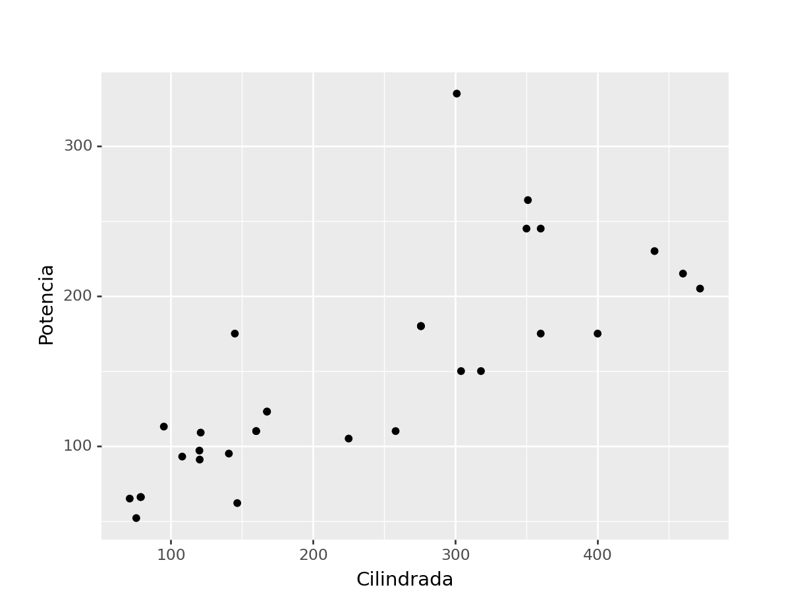
(
ggplot(mtcars, aes(x='disp', y='hp'))
+ geom_point()
+ geom_smooth(method='lm', color = "blue")
+ labs(x='Cilindrada', y='Potencia')
)<ggplot: (330674747)>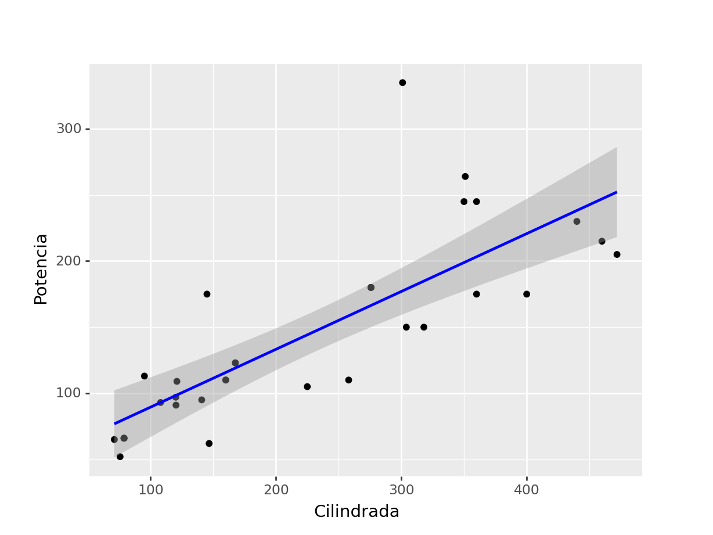
(
ggplot(mtcars, aes(x='disp', y='hp'))
+ geom_point()
+ geom_smooth(color = "blue")
+ labs(x='Cilindrada', y='Potencia')
)<ggplot: (333380320)>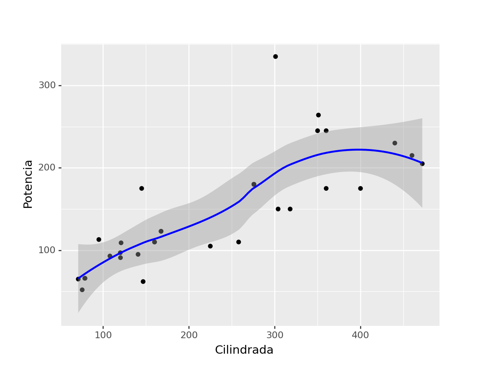
(ggplot(mtcars, aes('disp', 'hp', color='factor(gear)'))
+ geom_point()
+ stat_smooth(method='lm')
+ facet_wrap('~gear'))<ggplot: (333411518)>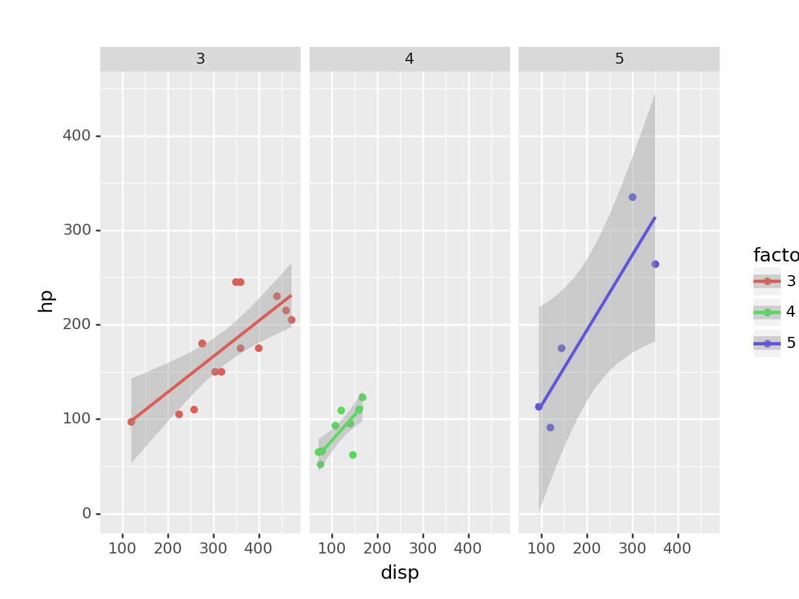
(
ggplot(mtcars, aes(x='disp', y='hp', color='factor(gear)'))
+ geom_point()
+ geom_smooth(method='lm')
+ labs(x='Cilindrada', y='Potencia')
)<ggplot: (335835743)>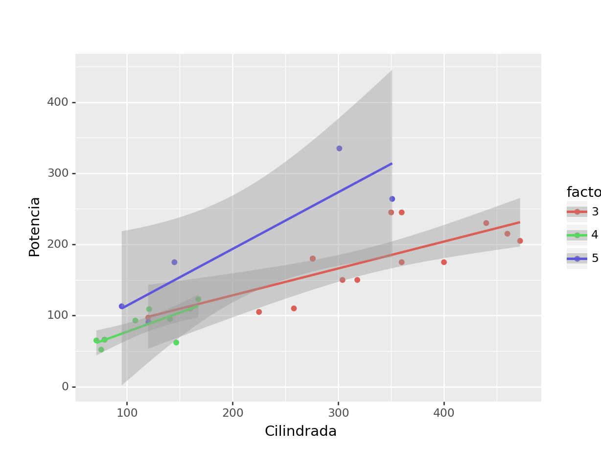
(mtcars
>> ggplot(aes(x = 'wt', y = 'mpg'))
+ geom_point(aes(color = 'factor(gear)', shape = 'factor(gear)'), size = 3, alpha = 0.8)
+ theme_minimal()
+ labs(title = "Datos mtcars, Motor Trend US magazine (1974)",
x = "Peso (libras/1000) [US]",
y = "Millas/galón [US]",
color = "Número de marchas",
shape = "Número de marchas"))<ggplot: (335886198)>